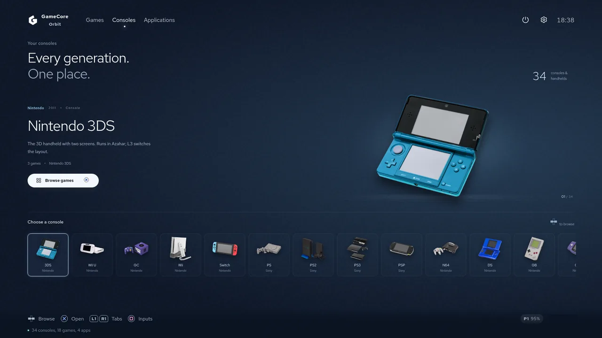
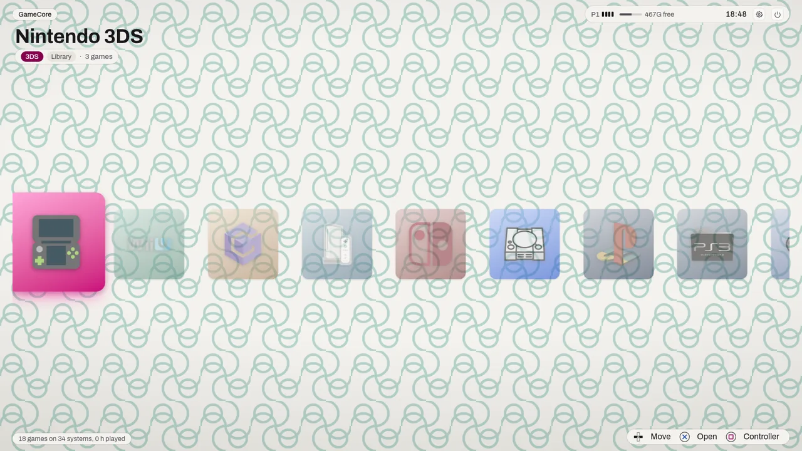
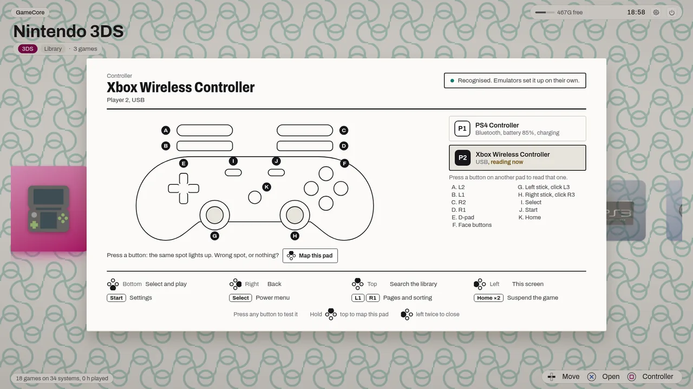
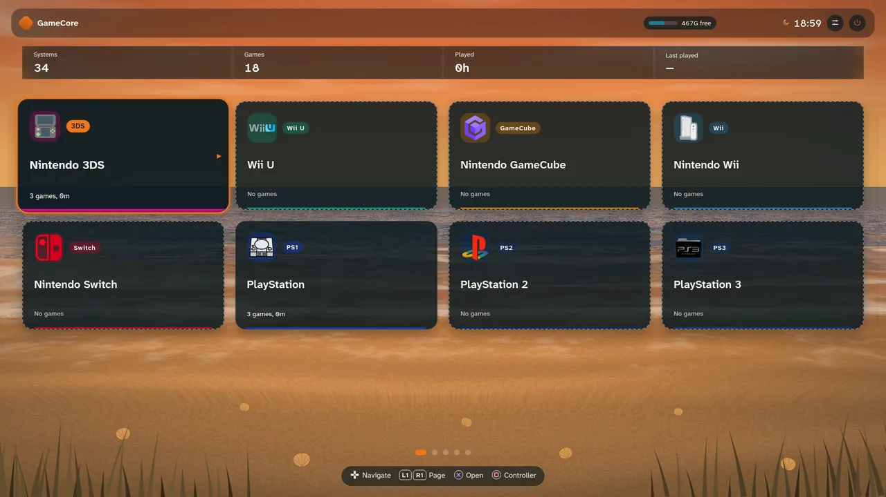
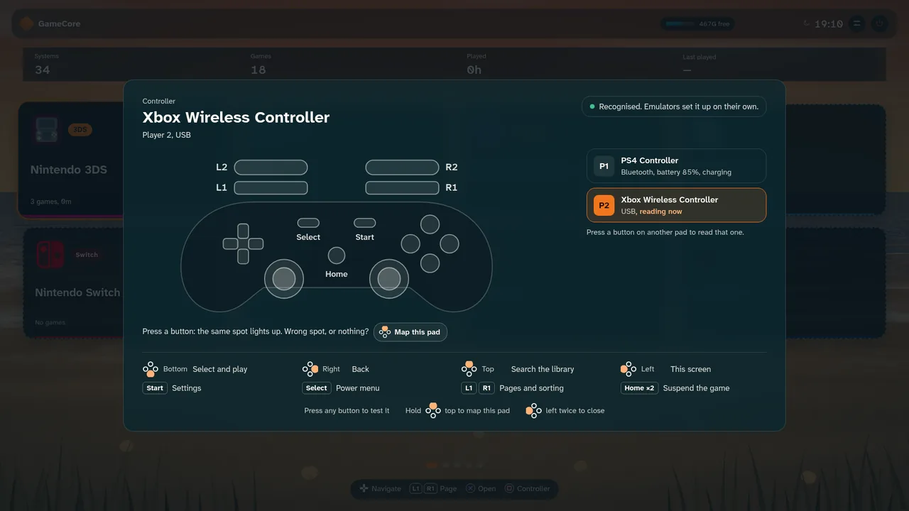

PS3, PS4, Switch, Wii U and Xbox 360, plus 29 more systems, driven entirely with a gamepad on an Arch Linux machine that stays a real computer underneath.
Linux: Arch and Manjaro. Windows is not available.

The installer adds GameCore to an Arch or Manjaro you already run. It is a graphical wizard: pick your emulators, press Install, type your password once. Running it again is safe.
One x86-64 file, nothing else to install first.
Download the installerchmod +x gamecore-installer
./gamecore-installerEvery theme runs the same screens with the same pad controls. Switch between them in Settings, and anyone can write a new one with the theme SDK.
Your library as boxed games on a papered wall: print, cardboard, labels.


A beach at the hour it really is, with a live ocean behind sea-glass panels.


About as long as the emulators take to download.
A step-by-step wizard: the user account, where the code and your files go, which emulators and apps you want. It asks for a password once, through the system's own dialog.
It installs GameCore and the emulators and sets up auto-login. The next boot comes up on the console screen.
That is the configuration step. GameCore writes each emulator's own config for the pads connected, per player slot. A pad nothing recognises goes through a mapping wizard, one button at a time, no keyboard.
Copy them into the per-system folders over the network or from a USB disk. After that the box updates itself from its Settings screen.
Most living-room emulation systems are built around decades of older machines and shipped as a frozen image. This one takes the other bet.
PS3, PS4, Switch, Wii U and Xbox 360 are the reason it exists. The 17 retro systems through RetroArch come after them, not the other way round.
They are Flatpaks from Flathub and update on their own schedule. RPCS3 and Eden change every few weeks; on a frozen image a compatibility fix waits for the image's next release.
A full Arch install with KDE Plasma underneath. Nothing is read-only or locked, and one command closes the console screen and hands the desktop back.
The first pad plugged in is Player 1 whatever its brand, the next is Player 2, like a real console. No player slot is tied to a brand.
This is harder than it sounds, and it is where most of the work went. Every emulator identifies devices its own way: some speak SDL's role names, some match a device name whose numbering is not the player slot, and one binds by a GUID that differs between USB and Bluetooth for the same pad, then fails silently when it does not match.
For a controller nothing recognises, a built-in wizard maps it in about a minute, full screen, driven by the pad being mapped. Press to record, hold to skip a button the pad does not have, press twice to go back.
Every emulator installs from Flathub unless noted. Apps sit next to them: Steam, Stremio, YouTube and Twitch.
| System | Emulator |
|---|---|
| PlayStation 3 | RPCS3 |
| PlayStation 4 | shadPS4 |
| Nintendo Switch | Eden |
| Wii U | Cemu |
| Xbox 360 | Xenia Canary through Wine |
| PlayStation 2 | PCSX2 |
| PlayStation | DuckStation AppImage |
| PlayStation Portable | PPSSPP |
| GameCube, Wii | Dolphin |
| Nintendo 3DS | Azahar |
| Nintendo DS | melonDS |
| Nintendo 64 | Rosalie's Mupen GUI |
| Game Boy, Color, Advance | mGBA |
| Super Nintendo | Snes9x |
| Systems | Core |
|---|---|
| NES, Famicom Disk System | Mesen |
| Master System, Game Gear, SG-1000, Mega Drive, Mega-CD | Genesis Plus GX |
| 32X | PicoDrive |
| Saturn | Kronos |
| Dreamcast, Naomi, Naomi GD-ROM, Atomiswave | Flycast |
| PC Engine, PC Engine CD, SuperGrafx | Beetle PCE |
| Arcade | MAME |
Better read here than found out after an install.